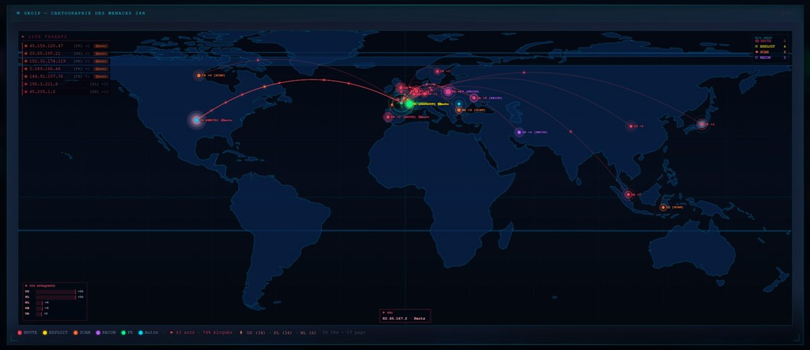
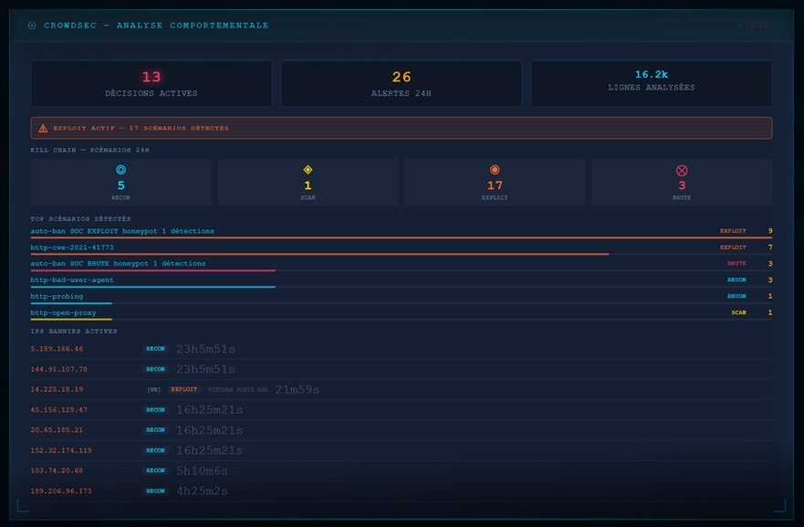
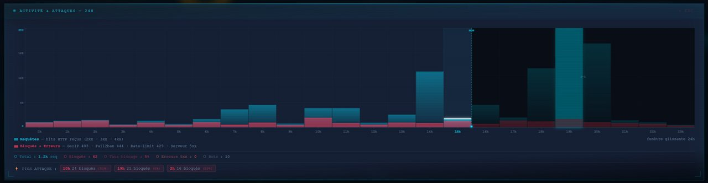
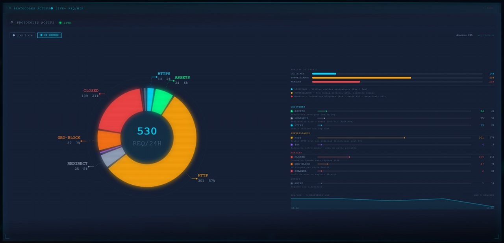
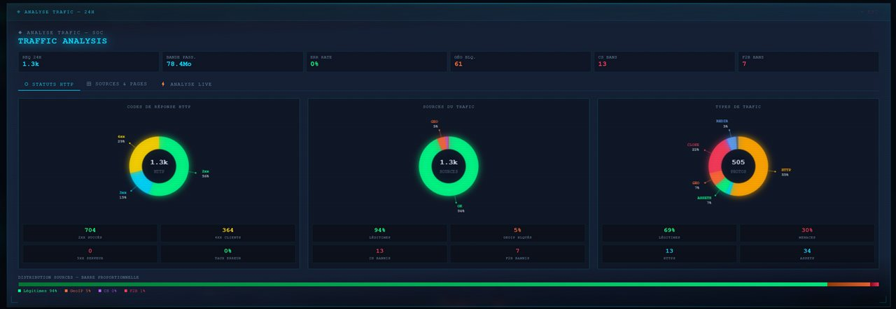

SOC Dashboard
MONITORING SÉCURITÉ · BOOT SEQUENCE
INITIALISATION...
MONITORING SÉCURITÉ TEMPS RÉEL · KILL CHAIN · IA INTÉGRÉE





Le SOC Dashboard est le résultat d'une construction itérative sur plusieurs mois. Chaque étape apporte une couche supplémentaire de visibilité, de détection ou d'automatisation.
Le dashboard SOC est un fichier HTML unique (~35 000 lignes) qui consomme des fichiers JSON générés côté serveur. Le pipeline collecte les données de plusieurs sources (logs nginx, CrowdSec, fail2ban, système, CVE, Windows, Proxmox) et les centralise dans un JSON de monitoring actualisé toutes les 60 secondes.
Chaque requête entrante est analysée et classifiée selon une adaptation de la Cyber Kill Chain de Lockheed Martin. Le score global est normalisé de 0 à 100 et détermine le niveau de menace affiché dans le dashboard. La classification est effectuée par monitoring_gen.py à chaque cycle et intégrée dans monitoring.json.
| Stage | Signaux détectés | Score ajouté | Action CrowdSec |
|---|---|---|---|
| RECON | robots.txt, .env probe, /.git, sitemap, crawler UA | +5 par signal | Tag comportemental, surveillance accrue |
| SCAN | /wp-admin, /cgi-bin, /.php inexistant, masscan UA | +10 par signal | Scénario http-probing déclenché |
| EXPLOIT | CVE paths (traversal, RCE), .env upload, xmlrpc | +20 par signal | Ban immédiat via bouncer nftables |
| BRUTE | 401 répétés >= 5 sur même IP en un cycle | +15 par IP | Jail fail2ban http-auth activée |
| DELIVERY | POST payload suspect, SQLi, XSS, LFI/RFI patterns | +25 par signal | Ban immédiat + alerte JARVIS TTS |
monitoring_gen.py est le coeur du pipeline. Ce script Python (~73 000 lignes commentées) collecte, normalise et agrège les données de toutes les sources en un seul fichier monitoring.json. Il est déclenché toutes les 5 minutes par cron via monitoring.sh (wrapper de lancement).
# monitoring_gen.py — structure générique import json, re, subprocess from datetime import datetime, timedelta from pathlib import Path LOG_FILES = ['/var/log/nginx/access.log', '/var/log/nginx/access.log.1'] OUTPUT = Path('/var/www/monitoring/monitoring.json') HONEYPOT_PATHS = ['/wp-admin', '/wp-login.php', '/.env', '/cgi-bin/', '/xmlrpc.php'] LOG_RE = re.compile( r'(?P<ip>\S+) \S+ \S+ \[(?P<time>[^\]]+)\] ' r'"(?P<method>\S+) (?P<path>\S+)[^"]*" (?P<status>\d{3}) (?P<size>\d+)' ) def classify_kill_chain(entries): chain = {"recon": set(), "scan": set(), "exploit": set(), "brute": set()} status_count = {} for e in entries: ip, path, status = e['ip'], e['path'].lower(), int(e['status']) status_count.setdefault(ip, {}).setdefault(status, 0) status_count[ip][status] += 1 if any(x in path for x in ['.env', 'robots.txt', '/.git', 'sitemap']): chain['recon'].add(ip) if any(x in path for x in ['/wp-admin', '/cgi-bin', '/.php', 'xmlrpc']): chain['exploit'].add(ip) # Brute force = 401 répétés sur même IP for ip, counts in status_count.items(): if counts.get(401, 0) >= 5: chain['brute'].add(ip) return {k: list(v) for k, v in chain.items()} def check_ssl_expiry(domain): result = subprocess.run( ['openssl', 's_client', '-connect', f'{domain}:443', '-servername', domain], capture_output=True, text=True, timeout=5, input='' ) # parse not_after date — retourne nb jours restants ...
# Monitoring JSON — toutes les 5 minutes */5 * * * * /opt/scripts/monitoring.sh >> /var/log/monitoring.log 2>&1 # Synchronisation CVE NVD — 3x par jour 0 6,13,21 * * * /opt/scripts/cron-cve-fetch.sh >> /var/log/cve-fetch.log 2>&1 # Rapport SOC quotidien — 08h00 UTC 0 8 * * * /opt/scripts/soc-daily-report.py >> /var/log/soc-report.log 2>&1 # Mise à jour GeoIP MaxMind — quotidien 03h00 0 3 * * * /usr/bin/geoipupdate >> /var/log/geoipupdate.log 2>&1 # Snapshot UFW — état pare-feu horodaté (toutes les 6h) 0 */6 * * * /opt/scripts/ufw-snapshot.sh >> /var/log/ufw-snapshot.log 2>&1 # Threat Intel — flux menaces externes 0 3 * * * /opt/scripts/threat-fetch.sh >> /var/log/threat-fetch.log 2>&1 # Proto-live — analyse protocoles réseau temps réel */1 * * * * /opt/scripts/proto-live.py >> /var/log/proto-live.log 2>&1 # Nettoyage logs rotatifs — hebdomadaire 0 2 * * 0 /opt/scripts/log-rotate-clean.sh >> /var/log/log-clean.log 2>&1
Le dashboard rafraichit ses données toutes les 60 secondes. Sur des sessions longues (plusieurs heures), un rendu DOM naif provoquerait des freezes perceptibles. Deux mécanismes sont combinés pour garantir une expérience fluide en permanence, même sur machine peu puissante.
| Mécanisme | Implémentation | Effet |
|---|---|---|
| If-Modified-Since | Header HTTP + _lastModified stocké en mémoire | 304 si fichier inchangé → 0 parsing, 0 DOM update |
| requestIdleCallback | render(data) différé dans callback idle | Exécution pendant créneau idle navigateur — 0 clipping |
| _lastGenAt | Comparaison timestamp JSON côté client | Double vérification applicative — ignorer si identique |
| Polling proto-live | Aussi idle-schedulé (cycle 15s) | Même protection pour le flux protocoles réseau |
// fetch JSON avec If-Modified-Since — dashboard SOC let _lastModified = null; async function fetchMonitoring() { const headers = {}; if (_lastModified) headers['If-Modified-Since'] = _lastModified; const res = await fetch('/monitoring.json', { headers }); // 304 = fichier inchangé — rien à re-parser ni à re-rendre if (res.status === 304) return; _lastModified = res.headers.get('Last-Modified'); const data = await res.json(); // Différer le rendu pendant un créneau idle du navigateur if ('requestIdleCallback' in window) { requestIdleCallback(() => render(data), { timeout: 2000 }); } else { setTimeout(() => render(data), 0); // fallback navigateurs anciens } } // Refresh toutes les 60s setInterval(fetchMonitoring, 60_000); fetchMonitoring(); // premier appel immédiat
| Fichier JSON | Générateur | Fréquence | Contenu principal |
|---|---|---|---|
| monitoring.json | monitoring_gen.py | 60s (cron) | nginx logs, CrowdSec, fail2ban, système, réseau, Proxmox, SSL, CVE, GeoIP, Kill Chain |
| windows-disk.json | windows-disk-report.ps1 | Chaque backup | Disques Windows, GPU RTX, CPU, RAM, liste sauvegardes VMs avec tailles |
| proto-live.json | proto-live.py | 15s | Répartition protocoles réseau en temps réel — fenêtre glissante 5 minutes |
| world.json | Statique (MaxMind) | — | GeoJSON frontières mondiales pour cartographie canvas des origines d'attaque |
JARVIS (assistant IA local Flask) est intégré au dashboard SOC via un auto-engine qui surveille les deltas de trafic et les métriques système. Quand un seuil critique est dépassé, JARVIS est automatiquement sollicité pour une analyse narrative LLM et une alerte vocale TTS.
| Trigger | Condition de déclenchement | Badge tuile | Action |
|---|---|---|---|
| Activité anormale | +15 événements vs dernier check JSON | Analyse auto | Analyse LLM narrative + affichage résultat |
| Alerte CPU | CPU serveur > 90% | Alerte critique | TTS + analyse LLM processus |
| Alerte IPs | Bans actifs CrowdSec > 100 | Alerte critique | TTS + analyse LLM menaces |
| Erreurs HTTP | 5xx > 5% du trafic total 24h | Alerte critique | TTS + analyse LLM services |
| Résumé quotidien | Chaque jour à 08h00 (heure locale) | Résumé du jour | Email rapport + TTS briefing matinal |
| Route | Méthode | Usage SOC |
|---|---|---|
| /api/gpu | GET | Statut JARVIS + modèle LLM actif + stats GPU RTX |
| /api/chat | POST | Analyse LLM des données SOC — retourne synthèse narrative |
| /api/tts | GET | Lecture vocale des alertes via edge-tts fr-CA-AntoineNeural |
| /api/security | GET | Journal blocklist LLM — tentatives tool calling bloquées |
| /api/soc/ban-ip | POST | Ban IP via cscli decisions add — confirmation LLM requise |
| /api/soc/unban-ip | POST | Lève le ban CrowdSec pour une IP — traçabilité dans journal |
| /api/soc/restart-service | POST | Redémarre un service autorisé — liste blanche configurable |
| /api/soc/actions | GET | Journal opérations proactives — horodatage + résultat |
Contexte : SOC Dashboard — analyse de sécurité automatique Données disponibles : trafic nginx 24h, décisions CrowdSec, jails fail2ban, Kill Chain actif, top IPs, scores protocoles Analyse la situation sécurité actuelle : - Y a-t-il des menaces actives à traiter en priorité ? - Quels scénarios CrowdSec dominent ? - Y a-t-il des anomalies dans le trafic HTTP ? - Recommande des actions concrètes si nécessaire. Format : 3-5 lignes concises, niveau [NOMINAL/MODÉRÉ/ÉLEVÉ/CRITIQUE], action si requise.
| Indicateur | Seuil | Niveau | Action automatique |
|---|---|---|---|
| CPU serveur | > 90% | CRITIQUE | Analyse JARVIS + alerte TTS |
| IPs bannies actives | > 100 décisions CrowdSec | CRITIQUE | Analyse JARVIS + alerte TTS |
| Erreurs 5xx | > 5% du trafic 24h | CRITIQUE | Analyse JARVIS + alerte TTS |
| SSL expiration | < 7 jours restants | ROUGE | certbot renew --force-renewal |
| Disque /var/www | > 85% utilisation | ROUGE | Nettoyage logs rotatifs automatique |
| RAM serveur | > 85% | ORANGE | Surveillance accrue, analyse processus |
| Top IP 24h | > 500 requêtes / IP | SUSPICION | Analyse GoAccess + éventuel ban manuel |
| AppSec WAF port | Port 7422 non répondant | ROUGE | systemctl restart crowdsec |
| Touche | Action |
|---|---|
| [F] | Ouvre le modal Firewall Matrix — règles nftables actives |
| [T] | Ouvre le modal Analyse Trafic — vue détaillée par heure |
| [E] | Envoie le rapport SOC par email (cooldown 60s) |
| [R] | Force un refresh JSON immédiat (contourne les 60s) |
| [Z] | Active le mode projection plein écran (salle de guerre) |
Cette solution est conçue pour un environnement homelab — réseau local uniquement. Le dashboard SOC n'est pas exposé sur internet. L'ensemble de la stack (reverse proxy, WAF, dashboard, IA locale) fonctionne dans un périmètre LAN maîtrisé. Cette architecture sert de laboratoire pour maîtriser les outils de défense en conditions réelles avant tout déploiement en environnement exposé.
| Scénario | Type d'attaque | Fréquence observée |
|---|---|---|
| http-cve-2021-41773 | Apache path traversal (CVE) | Très fréquent — scans automatisés en continu |
| http-cve-2021-42013 | RCE Apache (CVE) | Vagues périodiques de scans massifs |
| http-bad-user-agent | User-Agent malveillant connu | Continu — plusieurs centaines / jour |
| http-probing | Enumération de paths non existants | Continu — scans automatisés botnets |
| http-admin-interface-probing | Scan /admin /phpmyadmin /wp-admin | Continu — plusieurs par heure |
| http-wordpress-scan | Scan plugins/themes WordPress | Fréquent — même sur serveurs sans WP |
| http-sensitive-files | .env, backup.zip, .git, .DS_Store | Fréquent — outils OSINT automatisés |
| http-open-proxy | Tentative de proxy ouvert CONNECT | Occasionnel — botnets recherchant relais |
Des URLs pièges sont configurées dans les vhosts nginx. Elles ne retournent aucun contenu légitime. Tout accès déclenche un tag immédiat dans les logs et une classification EXPLOIT par monitoring_gen.py, suivie d'un ban automatique CrowdSec.